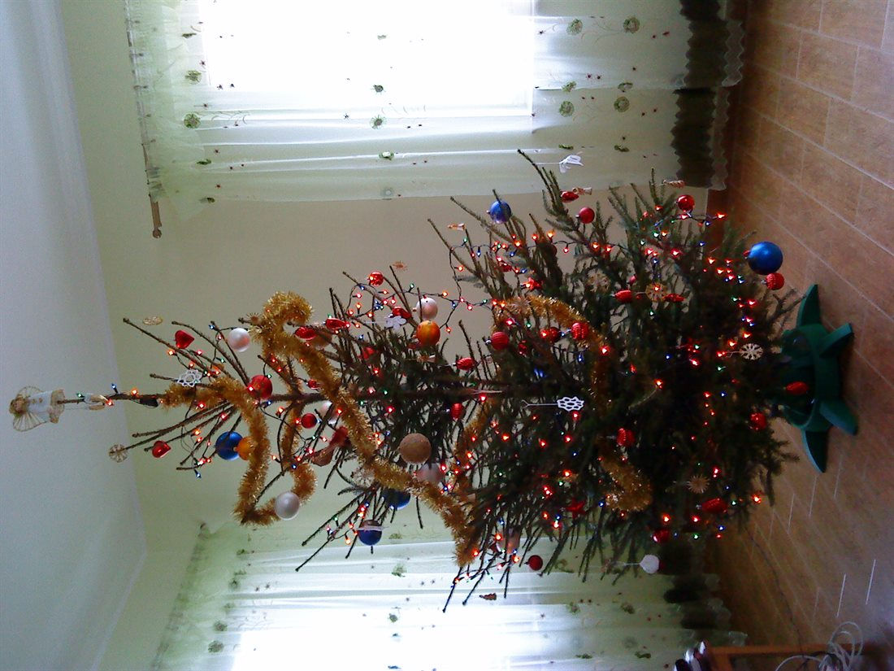

O mnie
Fotografuję ludzi, maszyny, krajobrazy i momenty, które nie proszą o powtórkę.
Portfolio Daniela Hryciuka łączy reportażową uważność z zamiłowaniem do drogi, techniki i światła. Strona została przygotowana pod duże archiwa zdjęć, prywatne galerie i szybkie publikowanie kolejnych albumów.
Doświadczenie
Reportaż, fotografia podróżnicza, motoryzacyjna i krajobrazowa. Kadry wybierane są pod rytm historii, czytelność sceny i naturalny charakter światła.
Sprzęt
- Nikon D3200
- Tair 11A
- Inne obiektywy manualne i systemowe
- Miejsce na dalszą listę sprzętu